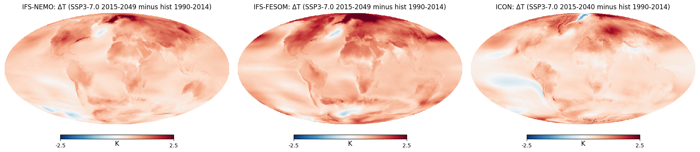

Climate Change Signal — DestinE Generation 2#
Compare 30-year mean 2m temperature between historical and scenario experiments across IFS-FESOM, IFS-NEMO, and ICON using monthly (clmn) data from the DestinE Climate DT Generation 2 simulations.
Show code cell source
from destine_climate_helpers import fetch_period
from destine_portfolio import _MODEL_ENDYEAR_RELEASE
import healpy as hp
import matplotlib.pyplot as plt
Show code cell source
# --- Configuration ---
PARAM = 'avg_2t'
PARAM_NAME = '2m temperature'
MODELS = ['IFS-NEMO', 'IFS-FESOM', 'ICON']
RESOLUTION = 'standard'
STORE_DATA = True # Set True to cache NetCDF files to DATA_DIR
DATA_DIR = './data'
# Historical period
HIST_YEARS = range(1990, 2015)
HIST_EXPERIMENT = 'hist' # activity: baseline
# Future period
SCEN_EXPERIMENT = 'SSP3-7.0' # activity: projections
SCEN_YEARS = range(2015, 2050)
Show code cell source
# Download monthly data for all models and both periods
data = {}
for model in MODELS:
print(f'\n=== {model} ===')
print(f'Fetching {HIST_EXPERIMENT} ({HIST_YEARS[0]}-{HIST_YEARS[-1]})...')
hist = fetch_period(model, HIST_EXPERIMENT, HIST_YEARS, PARAM, RESOLUTION, STORE_DATA, DATA_DIR)
# end year is per-model at release time (see _MODEL_ENDYEAR_RELEASE)
SCEN_YEARS = range(2015, _MODEL_ENDYEAR_RELEASE[model] + 1)
print(f'Fetching {SCEN_EXPERIMENT} ({SCEN_YEARS[0]}-{SCEN_YEARS[-1]})...')
scen = fetch_period(model, SCEN_EXPERIMENT, SCEN_YEARS, PARAM, RESOLUTION, STORE_DATA, DATA_DIR)
data[model] = {'hist': hist, 'scen': scen}
The resulting data is cached in the following folder structure if you have set
STORE_DATA = True
Show code cell source
!ls data/{ICON,IFS-FESOM,IFS-NEMO}/{hist,SSP*}/clmn/standard/*nc | head -20
data/ICON/SSP3-7.0/clmn/standard/avg_2t_2015.nc
data/ICON/SSP3-7.0/clmn/standard/avg_2t_2016.nc
data/ICON/SSP3-7.0/clmn/standard/avg_2t_2017.nc
data/ICON/SSP3-7.0/clmn/standard/avg_2t_2018.nc
data/ICON/SSP3-7.0/clmn/standard/avg_2t_2019.nc
data/ICON/SSP3-7.0/clmn/standard/avg_2t_2020.nc
data/ICON/SSP3-7.0/clmn/standard/avg_2t_2021.nc
data/ICON/SSP3-7.0/clmn/standard/avg_2t_2022.nc
data/ICON/SSP3-7.0/clmn/standard/avg_2t_2023.nc
data/ICON/SSP3-7.0/clmn/standard/avg_2t_2024.nc
data/ICON/SSP3-7.0/clmn/standard/avg_2t_2025.nc
data/ICON/SSP3-7.0/clmn/standard/avg_2t_2026.nc
data/ICON/SSP3-7.0/clmn/standard/avg_2t_2027.nc
data/ICON/SSP3-7.0/clmn/standard/avg_2t_2028.nc
data/ICON/SSP3-7.0/clmn/standard/avg_2t_2029.nc
data/ICON/SSP3-7.0/clmn/standard/avg_2t_2030.nc
data/ICON/SSP3-7.0/clmn/standard/avg_2t_2031.nc
data/ICON/SSP3-7.0/clmn/standard/avg_2t_2032.nc
data/ICON/SSP3-7.0/clmn/standard/avg_2t_2033.nc
data/ICON/SSP3-7.0/clmn/standard/avg_2t_2034.nc
Your data is stored in an
xarray.DataArray, grouped by model name and experiment
Show code cell source
data['IFS-FESOM']['scen'] # ICON/IFS-NEMO/IFS-FESOM + hist/scen
Show code cell source
# Compute climate change signal: future mean minus historical mean
diffs = {}
for model in MODELS:
hist_mean = data[model]['hist'].mean(dim='valid_time')
scen_mean = data[model]['scen'].mean(dim='valid_time')
diffs[model] = scen_mean - hist_mean
Show code cell source
# Plot climate change signal for each model
vmin = -2.5
vmax = 2.5
fig = plt.figure(figsize=(18, 5))
for i, model in enumerate(MODELS):
scen_end = _MODEL_ENDYEAR_RELEASE[model]
hp.mollview(
diffs[model].values, nest=True, flip='geo',
cmap='RdBu_r', min=vmin, max=vmax,
title=f'{model}: \u0394T ({SCEN_EXPERIMENT} 2015-{scen_end}'
f' minus {HIST_EXPERIMENT} {HIST_YEARS[0]}-{HIST_YEARS[-1]})',
unit='K', sub=(1, len(MODELS), i + 1),
)

Show code cell source
# Global mean temperature change per model
# (HEALPix pixels are equal-area, so a simple mean is area-weighted)
for model in MODELS:
print(f'{model}: global mean \u0394T = {float(diffs[model].mean()):.2f} K')
IFS-NEMO: global mean ΔT = 0.66 K
IFS-FESOM: global mean ΔT = 0.85 K
ICON: global mean ΔT = 0.54 K
How to extend this notebook for your analysis#
Change variable: set
PARAMto another variable shortName (e.g.'avg_tprate'for total precipitation rate), updatePARAM_NAME. Use 05_variable_lookup.ipynb to search available variables by name or keyword.Seasonal breakdown: after computing
diffs, you can group by month usingxarray.groupby('valid_time.season')Store data locally: set
STORE_DATA = Trueand adjustDATA_DIR; subsequent runs will then load from cacheExplore the data lazily: 03_lazy_browse_portfolio.ipynb (monthly) and 04_lazy_browse_portfolio_hourly.ipynb (hourly) let you browse the full portfolio as xarray Datasets without bulk downloads